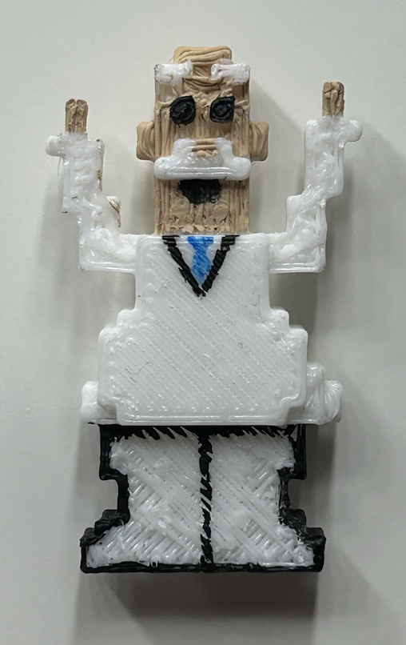
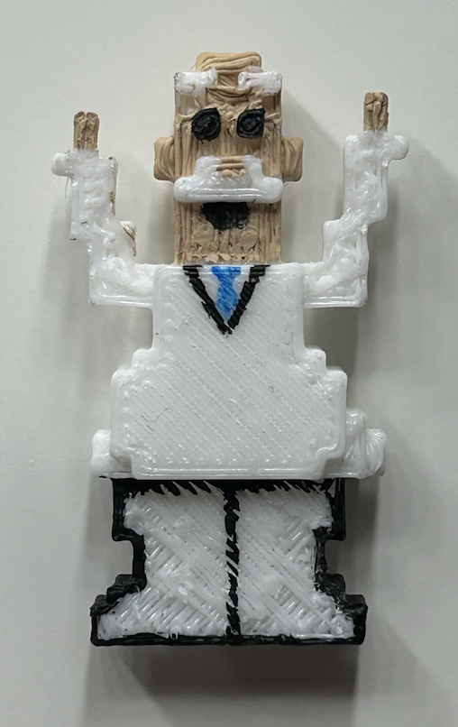

Dr.Simi
 

Dr. Simi 3D
September 21, 2024
What I created for this project was Dr.Simi. This figure is very popular in Mexican culture. As a little kid I remember passing by pharmacies for medicine and their would be someone in a costume dressed liked him. They would be dancing in a circle, waving at you as you passed by and people were excited to take pictures with him. I feel like this has a lot of cultural significance because who ever sees him will understnad where he is from and he become part of the culture.